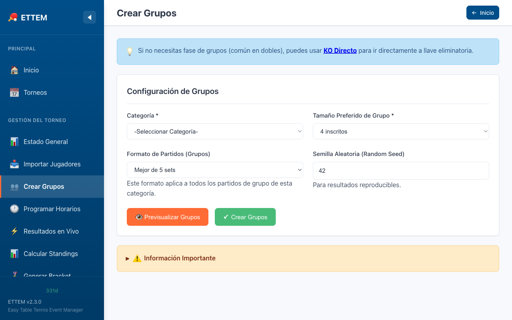

Crear Grupos
Cómo dividir los jugadores en grupos de Round Robin con siembra automática o manual.
Generar Grupos
Una vez que los jugadores están inscritos en una categoría, el siguiente paso es crear los grupos de la fase clasificatoria (Round Robin). ETTEM distribuye a los jugadores automáticamente usando snake seeding.

Pasos para crear grupos
- Desde el dashboard, haz clic en la categoría y luego en Crear Grupos.
- Selecciona el tamaño de grupo: 3, 4 o 5 jugadores por grupo.
- Revisa la distribución propuesta con snake seeding.
- Ajusta manualmente si lo necesitas (ver más abajo).
- Haz clic en Confirmar Grupos para crear los partidos.
Snake Seeding
El snake seeding distribuye a los jugadores de forma equitativa según su ranking, evitando que los mejores jugadores queden en el mismo grupo. El sistema ordena a todos los jugadores de mayor a menor ranking y los asigna en patrón de serpiente (zigzag) entre los grupos.
Ejemplo con 8 jugadores en 2 grupos de 4:
| Ronda de siembra | Grupo A | Grupo B |
|---|---|---|
| Ronda 1 → | #1 (mejor ranking) | #2 |
| Ronda 2 ← | #4 | #3 |
| Ronda 3 → | #5 | #6 |
| Ronda 4 ← | #8 | #7 |
ranking_pts = 0) se colocan al final de la lista y se
distribuyen igualmente entre los grupos durante las últimas rondas del snake.
Tamaños de Grupo
ETTEM admite grupos de 3, 4 o 5 jugadores. Cada tamaño tiene un número distinto de partidos:
| Tamaño | Partidos por grupo | Orden de partidos |
|---|---|---|
| 3 jugadores | 3 partidos | Estándar round robin |
| 4 jugadores | 6 partidos | Estándar round robin |
| 5 jugadores Nuevo V2.4 | 10 partidos | Tabla de Berger (ver abajo) |
Grupos de 5: Tabla de Berger Nuevo V2.4
Para grupos de 5 jugadores, ETTEM utiliza la Tabla de Berger, un orden de encuentros que optimiza el uso de mesas y minimiza los tiempos de espera. Los 10 partidos se juegan en el siguiente orden:
| Partido | Jugadores |
|---|---|
| 1 | Jugador 1 vs Jugador 4 |
| 2 | Jugador 2 vs Jugador 5 |
| 3 | Jugador 3 vs Jugador 4 |
| 4 | Jugador 1 vs Jugador 5 |
| 5 | Jugador 2 vs Jugador 3 |
| 6 | Jugador 4 vs Jugador 5 |
| 7 | Jugador 1 vs Jugador 3 |
| 8 | Jugador 2 vs Jugador 4 |
| 9 | Jugador 3 vs Jugador 5 |
| 10 | Jugador 1 vs Jugador 2 |
Ajuste Manual con Drag & Drop
Antes de confirmar los grupos, puedes arrastrar y soltar cualquier jugador entre grupos para hacer ajustes manuales. Esto es útil cuando:
- Dos jugadores del mismo club no deben estar en el mismo grupo.
- Quieres separar jugadores del mismo país en la fase de grupos.
- Deseas balancear grupos con jugadores sin ranking conocido.
Para mover un jugador:
- Haz clic y mantén presionado sobre el nombre del jugador.
- Arrástralo al grupo de destino.
- Suéltalo sobre la lista del grupo destino.
Después de Crear los Grupos
Una vez confirmados los grupos, ETTEM genera automáticamente todos los partidos de Round Robin para cada grupo. Pasarás a la fase de ingreso de resultados.